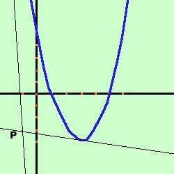

|
Data la parabola y= x2 - 6x + 5 trovare le equazioni delle tangenti condotte alla parabola dal punto A(-1,-3) Soluzione:  prima disegniamo la parabola ed il punto considero il fascio di rette passante per il punto A(-1,-3) y-(-3) = m[x-(-1)] y + 3= m(x + 1) Faccio il sistema fra il fascio di rette e la parabola y= x2 - 6x + 5 y= x2 - 6x + 5 Sostituisco il valore della y dalla prima equazione nella seconda ed ottengo l'equazione risolvente mx + m - 3 = x2 - 6x + 5 0 = x2 - 6x - mx - m + 5 + 3 meglio x2 - 6x - mx - m + 5 + 3 = 0 usando la proprieta' riflessiva dell'uguaglianza: se a=b anche b=a raccolgo ad equazione di secondo grado x2 - x(6+m) - m + 8 = 0 questa e' l'equazione risolvente il sistema: per avere due soluzioni coincidenti devo porre il delta dell'equazione uguale a zero Ho a = 1 b = -(6+m) c = -m + 8 36 + 12m + m2 + 4m - 32 = 0 Se non seiconvinto dei segni del quadrato ferma il mouse sul risultato metto in ordine m2 + 16m + 4 = 0 risolvo l'equazione di secondo grado ed ottengo m1 = - 8 - 2 m2 = - 4 + 2 Ho quindi le due tangenti
|